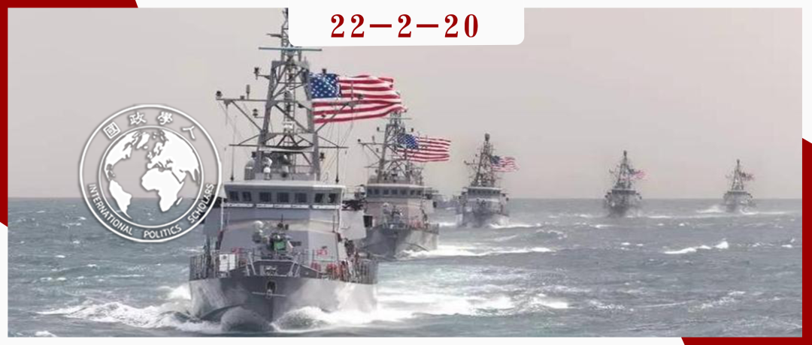

收录于合集

作品简介 ****
作者： Arzan Tarapore，斯坦福大学沃尔特休伦斯坦亚太研究中心南亚研究学者，美国国家亚洲研究局非常驻研究员。
编译： 穆若彤（国政学人编译员，中国人民大学PPE）
来源： Arzan Tarapore (2020) Building Strategic Leverage in the Indian Ocean Region, The Washington Quarterly , 43:4, 207-237, DOI: 10.1080/0163660X.2020.1850833

导读
本文作者认为，中美竞争的范围在未来将涉及印度洋领域，因此美国必须在此之前充分发挥印度在印度洋地区事务上的作用以制约中国并降低潜在风险。为了实现这一目标，美国应当在印度洋建立并实施“战略杠杆”(strategic leverage)，通过更加实际与符合逻辑的战略发展政治关系和军事能力，在巩固美国现有优势的基础上阻碍中国在印度洋地区获得优势。
从“战略杠杆”的战略内容上来看，这一战略构想是具备充分考量的，并且作者对于印度在国际事务中发挥的作用与四国联盟（Quad）所面临的挑战有着准确的评估。但值得注意的是，这一构想仍然建立在“中国威胁论”的思想之上，美国的战略研究始终秉持着零和博弈的思路，这很难让人们相信其战略在实践中将遵循一个仅为了实现安全与规避风险的防御路径。除此之外，“战略杠杆”希望通过构建四国联盟成员间的互用性来消除印度不确定的军事扩张对印度洋局势造成的影响，这表现出在美国的战略布局中，印度与印度洋地区的其他国家更多扮演着被制约者与服从者的角色，而非如美国所言是合作者（或称“志同道合的伙伴”，likeminded partners）。在这样的互动关系中，美国在联盟中的公信力或许同样会受到其特殊战略目的与角色的影响而相应地被削弱。
需要强调地是，本文并不是关于美国与中国战略竞争的最终决定。作者认为，继续与中国进行经济影响力的竞争仍是必要的，但随着时间的推移，美国可以通过建立战略杠杆重新塑造印度洋地区，更好地实现自身的利益诉求。本文所提出的“战略杠杆”策略仅仅是一个模糊的概念框架，其是否会在现实中影响到美国的印太战略走向仍然有待观察。
摘要
中国在印度洋领域日益增长的军事影响力为美国及其盟友带来了直接与间接的战略风险，也为中国提供了在该地区潜在竞争中的优势。作为回应，美国及与其具有相似想法的国家宣布将在“自由开放的印度洋- 太平洋”的名义下致力于实现地区现状的理想化。在此基础上，美国、印度、日本与澳大利亚组成了四国联盟，协商并最终协同实施相关政策。但无论是独立行动还是联合行动，联盟的反应都是无计划的，且仅限于重复“自由开放”的口号与争先恐后地调动国家资源进行持续竞争。更糟糕的是，缺乏战略理论的狂热努力耗费了机会成本，使得资源和决策者的注意力无法集中在更有成效的行动上。
为了弥补这一差距，本文提供了战略评估和概念框架，美国及其合作伙伴（尤其是但不限于四国集团）可以借此更有效地缓解中国军事影响力增加带来的风险。作者认为，当前最紧迫的任务是建立“战略杠杆”——以特定方式发展美国的政治关系和军事能力，巩固现有的优势，并阻碍中国在印度洋地区获得优势。
编译
01
中国的影响力引发战略风险
当前，中国迅速增强的军事影响力正朝着印度洋领域发展。中国已经在其东亚周边的海域建立了强大的网络化远程精确武器，2014年至2018年期间，中国人民解放军海军（PLAN）在东亚领海区域服役的新船舶吨位超过了整个印度海军。在美国方面看来，中国以极高的速度部署在印度洋执行调查与研究任务的船只，这反映出其对海底作业的长期兴趣。
作者认为，中国在印度洋领域发展军事影响力不仅是为了确保一带一路倡议(BRI)，也是为中国经济命脉提供能源供应和贸易路线，而中国在印度洋领域日益增长的军事影响力为美国及其盟友伙伴带来了直接与间接的战略风险，也为中国提供了在潜在战争中的优势。
02
有缺陷的战略逻辑与不切实际的假设
尽管面临着这些风险，但美国及其具有相似想法的伙伴并没有阻止中国的地区军事实力增长。美国迄今的反应在某些情况下是基于有缺陷的战略逻辑，在另一些情况下则是基于不切实际的假设。作者认为，当前指导美国战略的一些观点完全忽略了明确的战略逻辑，美国建立地区合作伙伴能力的呼吁依赖于模糊的平衡概念，而且往往没有阐明一个更强大的合作伙伴将如何缓解安全风险。
美国的一些分析人士提出了以长期“竞争战略”为中心的战略概念，以重塑中国的国防优先事项。但作者认为，实际上中国对其近海的优先考虑是基于其主权主张和抵制美国干预的极高政治价值；考虑到其优先顺序和在西方的战略深度，中国投入到其西部陆地边界的任何边际资源都不会以牺牲中美在其近海的军事平衡为代价。
另一个有缺陷的观点使用了惩罚威慑（deterrence by punishment）的逻辑。这一逻辑认为，美国可以通过威慑劝阻来消除战略风险：美国在印度的支持下，可以实行有效的威胁或封锁。即使在威慑失效的情况下，这一观点的鼓吹者也认为封锁可以有效地迫使中国在其他地方让步。但惩罚逻辑在印度洋事务中是有缺陷的，因此缺乏可信度。除此之外，作者认为基于惩罚的概念可能是有吸引力的选择，因为这为美国及其合作伙伴提供了一种向中国施压的方式，但惩罚威慑的逻辑仍然缺乏成功阻止或强迫对方行为的理论。
在另一些情况下，美国及其合作者的政策则被不切实际的假设破坏。在过去的二十年中，美国认识到印度成为中国的制衡者的潜力，并且开始通过“战略利他主义”的政策支持印度的崛起，期望印度可以成为反对中国的重要堡垒。作者认为，“战略利他主义”的政策基于两个在经验上越来越不可靠的假设：1. 印度的经济军事实力将迅速增长并且与中国的实际差距将不断缩小；2. 美国和印度在关键地区问题上可以保持政策一致。但在事实上，由于印度经济增长在缺乏结构性改革的情况下放缓，其军事现代化缺乏关键资源，因此与中国的差距也正在不断扩大。
03
印度的关键比较优势与制约因素
在美国的合作者中，印度在印度洋领域拥有最大的影响力。印度将是美国试图减轻地区风险所要争取的核心力量，也是迄今为止最大的沿海国家。人口、经济与军事等能力的原始投入是印度长期积累的物质力量的基础，但作者认为，考虑到印度调动能力的不确定性，一种只依赖与中国进行对称的物质竞争的战略很容易导致政策失败。
如果美国及其合作者转而制定一项利用印度相对优势的战略，那么这种风险将更容易得到管理。在四国联盟中，印度在印度洋地区拥有最大的结构性优势。这些优势基于地理位置和历史上长期存在的非正式和正式关系，因此能够适应物质力量或政策变化的快速转向： 第一，印度拥有核心的地理位置， 使其更靠近海洋的重要交通线(SLOCs)和咽喉点，在整个地区部署海军力量方面具有相对优势； 第二， 印度在整个印度洋地区拥有 广泛的非正式经济联系和社会网络， 在20世纪的世界大战和去殖民化之后，资本、人员和思想的循环流动失去了动力，但印度侨民及其语言、文化和家庭关系仍然分散在国外，这些非正式的经济和社会关系为印度提供了与从非洲到东南亚的精英和社会网络的持续联系； 第三， 印度在与印度洋地区多数国家富有成果的关系(produvtive relationships) 上拥有相对优势，与美国、日本、澳大利亚与法国等国家的政策与业务合作使印度的军事能力获得极大提高，而且由于遵循着“战略自治”的传统，印度还与美国及其盟友所回避的其他地区的国家保持着良好关系。
尽管与其他国家相比具有上述相对优势，印度也受到自身特点的制约。地理因素和路径依赖的历史也给印度的行动增加了限制。 第一， 印度的物质力量因 资源短缺 而受到严重限制。印度平庸的经济表现、功能失调的购买流程以及战略规划的缺乏都严重限制了其军事现代化，随着预算拨款的缩减和人员成本的激增，印度军方无法给予足够的投资来替换落后的平台以及构建新的军事威慑力平台。 第二， 印度的军事力量在很大程度上仍然被其北部大陆边缘的动向所主导， 而印度洋地区则在整体安排中处于劣势 。 第三， 印度仍然 不愿扮演主导角色 ，外交上保持敏感使其不会表现出对印度洋地区小国的专横，尽管这种专横不仅仅会产生坏的影响。 第四， 印度仍然 不愿公开和正式地与任何其他大国结盟。
04
建立和实施“战略杠杆”
鉴于以上优势与制约因素，继续寻求通过建设物质力量或以征收高昂成本作为威胁的战略进行回应很可能会失败。对于美国来说，一个更可行有效的选择是与印度合作，在印度洋地区建立集体的战略杠杆。建立战略杠杆同时包含政治与军事两个层面的内容，是更加适合印度与四国联盟的减轻战略风险的方法，它不需要印度物质力量的显著增长，也不需要支持国家间一致的政策。
战略杠杆将通过使用以拒止进行威慑(deterrence by denial)的逻辑来降低风险。通过否认进行威慑的目的是强化防御堡垒，让潜在对手相信，侵略要么会彻底失败，要么代价高昂。理想情况下，敌人被劝阻不去侵略；但是，即使对手没有被吓倒，否认也会试图在物质上或政治上阻碍侵略者实现其目标。为了通过否认来加强威慑，印度和其他合作者需要加强与地区国家机构的政治关系，并发展与中国相对应的军事能力。
实施建立战略杠杆的行动没有单一的方法。尽管战略杠杆可以并且应该是建立一系列政治联系和军事能力的综合方法，但本文提供了一个指示性的尝试，强调国防政策的一些要素。
首先，要确保较小地区国家的政府机构在制度上与印度或大国更紧密地联系在一起。 这一步骤将寻求确保小国政府拥有广泛的官僚或军事基础，以支持与印度的持续安全伙伴关系。这将有助于为政策连续性和抵制小国安全方向的突然转变提供内部支持。因此，即使中国与某些国家的特定领导层形成共识，该国的官僚机构和军队也会受到条约或谅解备忘录等正式机制的约束，以及官员间的非正式抵制，这两种机制都会让安全政策的快速转向变得更困难。
其次，在整个地区提前部署印度或其他合作国家的人员或物资，这种事先安排可以军事单位或其他政府机构的形式存在。 借用扩展威慑理论的原则，这一举措的目的在于在整个地区建立一条印度的“绊索”（tripwire），如果东道国成为胁迫或攻击的受害者，这将牵连印度或其他合作国家的利益。
考虑到其长期广泛的政治关系，印度是四国联盟中最适合在印度洋大部分地区部署绊索的国家。轮换部署的概念也可能是成为四国联盟目标的一部分。更广泛地说，印度、澳大利亚和印度尼西亚之间的三边合作可以在龙目海峡和巽他海峡周围的关键海域汇集稀缺的海军监视能力，使得各方可以共享这一优势。
再次，在有能力的现有合作者之间建立互用性(interoperability)，尤其是在印度和美国、日本、澳大利亚和法国等国家之间。 这一步骤的目的不仅是提高印度的军事效力，还包括其他可能寻求与印度在印度洋合作开展行动的国家的军事效力。如果这些国家的军队能够完美地进行通信、补给和作战行动，可用于遏制胁迫或冲突的力量将大大增强；即便在最坏的情况下，他们也将增加战时可用的兵力。互用性是抵消困扰所有四国联盟成员的资源限制和联盟行动固有问题的关键。有了互用性，印度洋地区将不必依赖印度不确定的军事扩张。
印度已采取许多重要的步骤来与当下的同盟建立互用性。印度从美国获得的武器越来越多，这意味着它拥有越来越多的通用设备。而互用性的下一步是逐步扩大印度军方可以与合作者有效合作的武器系统和任务集的类型。从根本上说，这将要求合作者的互用性与战场表现、成本和工业补偿一起成为印度购买活动的主要考虑因素。
最后，建立战略杠杆是为了发展海上防御的军事能力。 在海上封锁的海军战略中，印度及其合作者将提高中国的进攻成本，从而阻止中国部署武力，并在必要时威胁将中断其为军事或准军事目的而使用的海上交通线。海上控制战略寻求不受干扰地使用海洋的能力，但通常有更高的海军力量门槛，以及发现并决定性地击败敌人舰队的能力。相比之下，海上封锁对印度及其合作者能力的要求则更加适度。海上封锁有多种形式，而在这里更接近于“海上游击战”的概念，而不是在海上建立屏障这样更宏大的概念。
印度的地理中心地位再次突显了其作为主要合作者在实施海上封锁战略中的重要性。而印度的同盟将发挥关键作用：美国和澳大利亚已经发布了战略或理论文件，概述了其发展远程海上封锁能力的计划。印度及其支持者可以共享战术专业知识，通过联合和日益复杂的多国训练演习提高技能，提供相互后勤供应，并最终共享情报和计划。
05
更加实际与有效的战略
建立战略杠杆的行动旨在降低中国在印度洋地区军事影响力带来的风险。在美国及其合作者中，印度将是该地区最重要的力量。“战略杠杆”是直接从对印度独特的地理和政治优势的战略评估中得出的框架，并不期望印度复制美国的优势或反映中国的日益增强的影响力，其为美国应当采取的行动提供了带有描述性的路线尝试而非具体方案的基本逻辑。相似地，“战略杠杆”也为美国、印度与其他合作者间的战略关系提供了组织原则。
本文并不是关于与中国战略竞争的最终决定。作者认为，继续与中国进行经济影响力的竞争仍是必要的，因为这将证明在整个印度洋- 太平洋地区存在替代接受中国援助的其他方式，而随着时间的推移，美国将通过建立战略杠杆塑造印度洋地区，采取切实有效的步骤实现其利益诉求。
词汇整理
战略杠杆 strategic leverage
海上交通线 **** significant sea lines of communication (SLOCs)
互用性 interoperability
购买活动（尤指为政府或机构） procurement activity
审校 | 何诗雨 江若婵
排版 | 顾金源 王慧瑜
文章观点不代表本平台观点，本平台评译分享的文章均出于专业学习之用, 不以任何盈利为目的，内容主要呈现对原文的介绍，原文内容请通过各高校购买的数据库自行下载。

国政学人
支持学术公益与知识传播
微信扫一扫赞赏作者 __赞赏
已喜欢，对作者说句悄悄话
取消 __
发送给作者
发送
最多40字，当前共字
上一页 1/3 下一页
长按二维码向我转账
支持学术公益与知识传播
受苹果公司新规定影响，微信 iOS 版的赞赏功能被关闭，可通过二维码转账支持公众号。